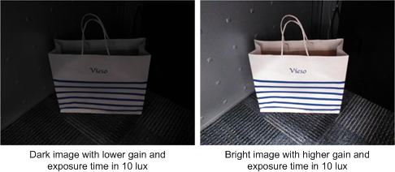
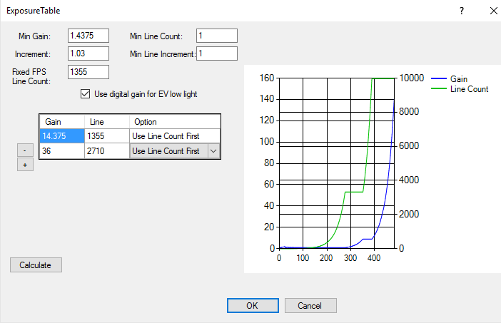

Increase brightness in low-light scenes (around 10 lux)
Increase gain or line count (exposure time) to increase brightness in low-light scenes. 
Tune the exposure table. Increase the gain by a factor of 2.

The gain and line count (exposure) are linear. To get 2x image
brightness, increase gain x2 or line count x2, or (gain * line count) x2. Increase
only the analog gain because increasing digital gain also increases noise. Increasing
line count (exposure time) increases motion blur and hand jitter. Obtain the maximum
sensor analog gain value from the sensor vendor.
Capture an image with the test condition to verify the results. A larger gain
produces more noise or a longer exposure time causes more motion blur and hand
jitter.